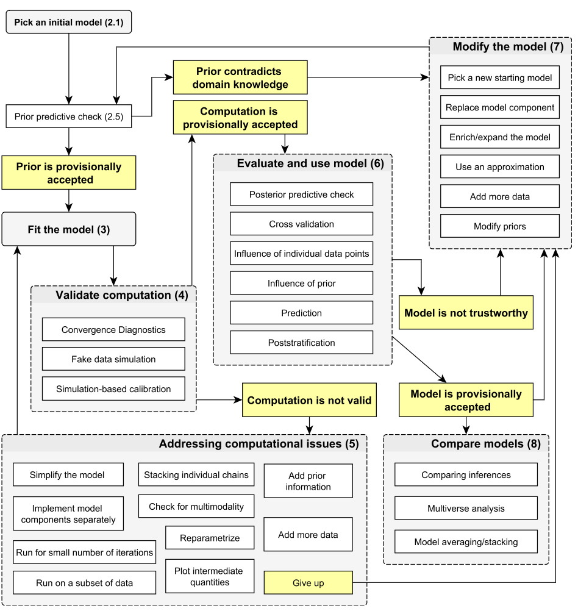
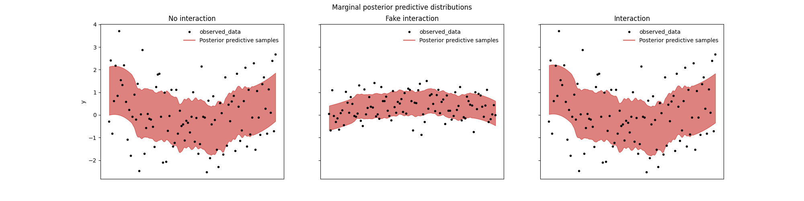

def print_hello():
print("Hello!")
print_hello()Hello!A report created using bibat version {{ cookiecutter.bibat_version }}
Write your report here in pandoc markdown.
Create Pdf and Html files based on this document by running quarto render report.qmd from the project root. If you want to remove some of these formats or add a new one, you can do so by editing the format field of the document’s yaml front matter. For example if you want to create a version that your collaborators can open in Microsoft Word:
---
format:
html: default
pdf: default
docx: default
---Refer to entries in bibliography.bib using their bibtex keys like this: Gelman et al. (2020).
Include images like this:

Note that you can also include links to images in the main project’s plots folder:

Include margin notes like this1
1 I’m a margin note!
Write code blocks like this:
def print_hello():
print("Hello!")
print_hello()Hello!Note that when quarto rendered the document it evaluated the code above and printed the results! Quarto supports execution of Python, R and Julia code, and can print figures that or even interactive widgets. If you want to include a block of code from one of these languages, but don’t want quarto to execute it, or want to customise what quarto does with the code in another way make sure the first line is #|, e.g.:
def print_hello():
print("Hello!")
print_hello()Check out the quarto guide for more information about how to document your work using quarto.
A list of references should appear here: